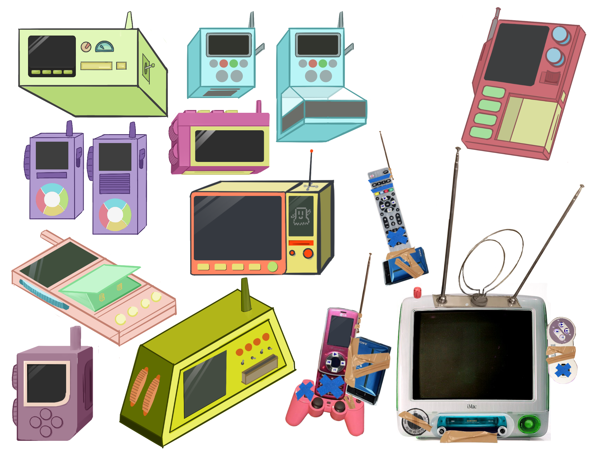
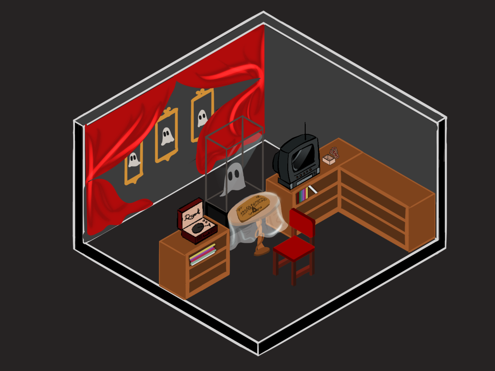
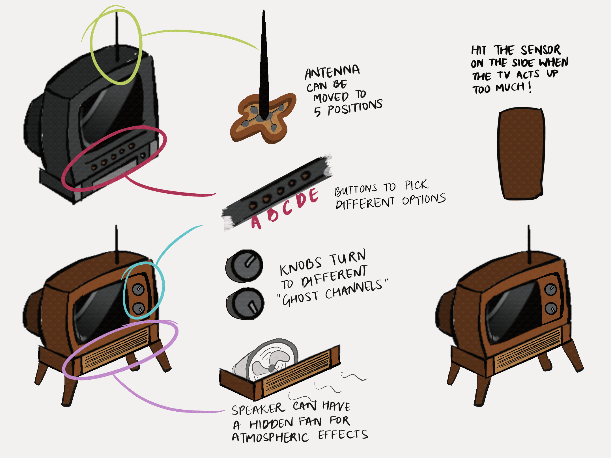

Concept Design
Concept sketches created on Procreate, SketchUp, and Blender.

.png)
.png)
.png)
CONCEPT DEVELOPMENT / ALT CTRL
GHOST
DETECTION
DEVICE
Designing a physical device for an alternate-control game about detecting and interacting with ghosts.
CONCEPT ART · PROCREATE · SKETCHUP · BLENDERWhat would a ghost detector feel like?
The goal was to develop the visual language and physical form of a fictional ghost-detection device before moving into fabrication and interactive prototyping.
Early exploration focused on silhouette, ergonomics, interaction points, and the relationship between believable hardware and supernatural functionality.
Built around physical interaction.
The concept was developed around a small collection of physical components that could become part of the player's interaction with the device.
A screen
Microcontroller
4 switches
Visual feedback
A VCR insert slot
Distance detection
Antenna
Environmental feedback
An on/off switch or lever
Player interaction
A potentiometer
Player interaction
A rotaty dial
Player interaction
From gesture
to silhouette.
Rapid sketches explored different silhouettes, control layouts, proportions, and ways the device could communicate its function.


Making the
sketch physical.
The selected concepts were translated into rough 3D forms to test proportions, construction, and physical relationships between components.
From object
to artifact.
Blender was used to push the selected form toward a more resolved visual direction and explore how the device could exist within the game's world.


The final form balances recognizable hardware with a visual language that suggests something unfamiliar.